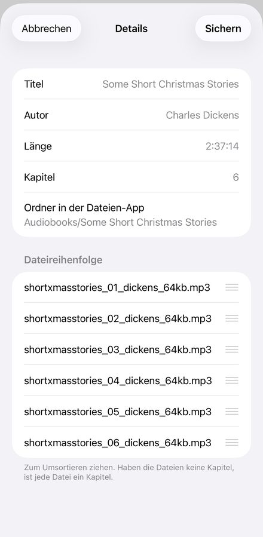
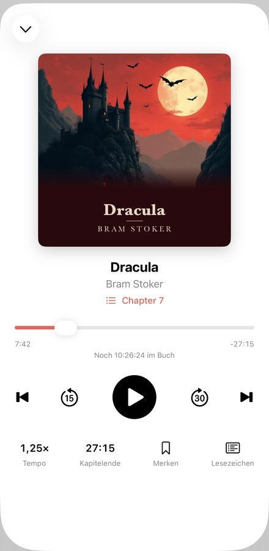
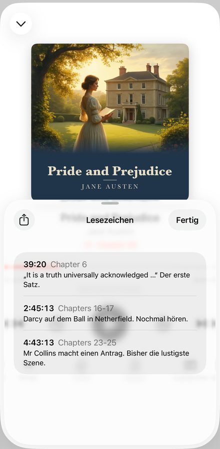

Listenshelf
Ein Hörbuch-Player für die M4B- und MP3-Dateien, die du schon hast.
Listenshelf ist ein Hörbuch-Player für iPhone und iPad. Er spielt Hörbuchdateien ab, die du selbst mitbringst: M4B, MP3, M4A und AAC.
Du importierst eine Datei oder einen ganzen Ordner aus der Dateien-App und hörst offline. Listenshelf zeigt die Kapitel in M4B-Dateien, spielt mit 0,5- bis 3-fachem Tempo, ohne dass sich die Stimmlage ändert, hat einen Schlaftimer und Lesezeichen und merkt sich für jedes Buch Stelle und Tempo.
Die ersten 2 Bücher sind kostenlos, mit allen Funktionen. Listenshelf Unlimited, ein einmaliger Kauf (5,99 US$ in den USA), schaltet beliebig viele Bücher frei. Es gibt kein Abo und kein Konto. Kopiergeschützte Hörbücher von Audible oder Apple Books kann die App nicht abspielen.
Bald im App Store
So funktioniert’s
Datei oder Ordner importieren
Tippe in der Bibliothek auf +. Mit „Dateien importieren …“ wird jede Datei ein eigenes Buch. „Ordner als ein Buch importieren …“ fasst alle Audiodateien eines Ordners zu einem Buch zusammen, nach Namen sortiert, sodass Teil 2 vor Teil 10 kommt. iCloud Drive, Google Drive, Dropbox und OneDrive gehen, wenn sie in der Dateien-App eingerichtet sind. Eine M4B-Datei kannst du auch direkt aus der Dateien-App mit Listenshelf öffnen.

Beim Hören
Kapitel aus M4B-Dateien erscheinen mit ihren Titeln; ein Buch aus mehreren Dateien ohne Kapitel bekommt pro Datei ein Kapitel. Das Tempo reicht von 0,5× bis 3× und wird für jedes Buch gespeichert. Die Sprungtasten lassen sich auf 10, 15, 30, 45 oder 60 Sekunden stellen. Der Schlaftimer läuft 5 bis 90 Minuten oder bis zum Kapitelende und blendet in den letzten 10 Sekunden aus. Nach einer Pause springt die Wiedergabe 3 Sekunden zurück, nach mehr als 5 Minuten Pause 10 Sekunden; das lässt sich abschalten.

Lesezeichen und deine Dateien
Ein Lesezeichen merkt sich die Stelle, auf Wunsch mit Notiz. Alle Lesezeichen und Notizen eines Buchs kannst du über das Teilen-Menü als reinen Text exportieren. Importierte Bücher sind normale Dateien in der Dateien-App unter Auf meinem iPhone › Listenshelf › Audiobooks, du kannst sie jederzeit herauskopieren.

Welche Hörbücher Listenshelf abspielt
| Woher das Hörbuch kommt | Läuft in Listenshelf | Wie |
|---|---|---|
| LibriVox (kostenlose, gemeinfreie Aufnahmen) | Ja | M4B-Datei oder MP3-Dateien laden und importieren. |
| Ohne DRM gekaufte Hörbücher als M4B oder MP3 | Ja | Die geladenen Dateien aus der Dateien-App importieren. |
| Selbst gerippte CDs | Ja | MP3-, M4A- oder AAC-Dateien; ein Ordner wird ein Buch. |
| Audible | Nein | Die Dateien sind kopiergeschützt (DRM). Listenshelf kann sie nicht öffnen. |
| Apple Books | Nein | Dort gekaufte Hörbücher sind kopiergeschützt (DRM). Listenshelf kann sie nicht öffnen. |
Was Listenshelf nicht kann
- Kopiergeschützte Hörbücher (DRM), etwa von Audible oder Apple Books, spielt es nicht ab.
- Es verkauft, streamt und lädt keine Hörbücher. Die Dateien bringst du mit.
- Es gibt keine CarPlay-App und keine Apple-Watch-App.
- Die Hörposition wird nicht zwischen iPhone und iPad abgeglichen. Jedes Gerät hat seine eigene Bibliothek.
- ZIP-Dateien entpackt Listenshelf nicht. Tippe die ZIP-Datei vorher in der Dateien-App an, dann wird ein Ordner daraus.
- Läuft auf iPhone und iPad mit iOS 17 oder neuer. Die App gibt es auf Deutsch und Englisch.
Fragen
Wie spiele ich M4B-Hörbücher auf dem iPhone ab?
Mit einem Hörbuch-Player, der M4B-Dateien liest, zum Beispiel Listenshelf. Leg die M4B-Datei in der Dateien-App ab, tippe in Listenshelf auf +, wähle „Dateien importieren …“ und dann die Datei. Listenshelf liest Kapitel, Cover, Titel und Autor aus der Datei und speichert beim Hören laufend deine Stelle.
Gibt es einen Hörbuch-Player fürs iPhone ohne Abo?
Ja. Listenshelf ist für die ersten 2 Bücher kostenlos, mit allen Funktionen und ohne Zeitlimit, und ein einmaliger Kauf schaltet beliebig viele Bücher frei. Es gibt kein Abo, keine Werbung und kein Konto, und der Kauf gilt auch in der Familienfreigabe.
Wie höre ich LibriVox-Hörbücher auf dem iPhone?
Lade das Buch bei LibriVox als M4B-Datei herunter, wenn es eine gibt, sonst als MP3-Dateien, und importiere es in Listenshelf. Eine M4B-Datei wird ein Buch mit Kapiteln. MP3-Dateien legst du in einen Ordner und wählst „Ordner als ein Buch importieren …“; die Dateien werden nach Namen sortiert und jede wird ein Kapitel. Ist der Download eine ZIP-Datei, tippe sie vorher in der Dateien-App an, um sie zu entpacken.
Kann Listenshelf Hörbücher von Audible oder Apple Books abspielen?
Nein. Hörbücher von Audible und Apple Books sind mit DRM geschützt, einem Kopierschutz, der sie an die Apps und Geräte des Anbieters bindet, und Listenshelf kann ihn nicht entfernen. Listenshelf spielt DRM-freie Dateien ab: LibriVox-Aufnahmen, ohne Kopierschutz verkaufte Hörbücher und selbst gerippte CDs.
Welche Formate unterstützt Listenshelf?
M4B, M4A, MP3 und AAC. Kapitel in M4B-Dateien erscheinen mit ihren Titeln. Bei MP3-Dateien liest Listenshelf Titel, Album, Interpret und eingebettetes Cover und nimmt eine cover.jpg oder folder.jpg im selben Ordner als Cover.
Wie wird aus einem Ordner voller MP3-Dateien ein Hörbuch?
Tippe in Listenshelf auf +, wähle „Ordner als ein Buch importieren …“ und dann den Ordner. Alle Audiodateien im Ordner und in seinen Unterordnern landen in einem Buch, nach Namen sortiert (Teil 2 vor Teil 10), ohne Obergrenze für die Zahl der Dateien. Stimmt die Reihenfolge nicht, halte das Buch gedrückt, wähle „Details und Dateireihenfolge“ und zieh die Dateien an die richtige Stelle.
Geht meine Stelle im Buch verloren?
Nein. Listenshelf speichert die Position alle 5 Sekunden und sofort, wenn du pausierst, springst oder die App verlässt; als wir die App im Test hart beendet haben, fehlten etwa 3 Sekunden. Jedes Buch behält seine eigene Stelle und sein eigenes Tempo. Die Positionen bleiben auf dem Gerät und werden nicht zwischen iPhone und iPad abgeglichen.
Was unterscheidet Listenshelf von Hörbuch-Playern im Abo?
Vor allem, wie du bezahlst und wo deine Bücher liegen, weniger die Wiedergabefunktionen. Listenshelf kostet nach 2 kostenlosen Büchern einen einmaligen Kauf, ohne Abo und ohne Werbung, und fragt danach nicht wieder nach Geld. Deine Bücher bleiben normale Dateien in der Dateien-App, und Lesezeichen und Notizen lassen sich als Text exportieren. In der App ist nichts eingesperrt.
Brauche ich für Listenshelf ein Konto oder eine Internetverbindung?
Nein. Es gibt kein Konto, und die Wiedergabe funktioniert offline. Listenshelf erhebt keine Daten; Bücher, Hörpositionen und Lesezeichen bleiben auf deinem Gerät. Internet brauchst du nur, um Dateien aus einem Cloud-Dienst zu importieren, und für den Kauf im App Store.
Läuft Listenshelf auf dem iPad, mit CarPlay oder auf der Apple Watch?
Auf iPhone und iPad mit iOS 17 oder neuer, ja; auf dem iPad stehen Kapitel und Lesezeichen im Player neben dem Cover. Eine CarPlay-App und eine Apple-Watch-App gibt es nicht. Sperrbildschirm, Kontrollzentrum, AirPods und Kopfhörertasten funktionieren.
Was kostet Listenshelf?
Die ersten 2 Bücher sind kostenlos, mit allen Funktionen und ohne Zeitlimit. Listenshelf Unlimited ist ein einmaliger Kauf (5,99 US$ in den USA; die Preise sind je nach Land unterschiedlich), der beliebig viele Bücher freischaltet und mit der Familienfreigabe funktioniert. Ein gelöschtes Buch gibt kein freies Buch zurück, dasselbe Buch erneut zu importieren ist kostenlos, und importierte Bücher bleiben in jedem Fall abspielbar.
Die Zahlen auf dieser Seite (Speichern alle 5 Sekunden, etwa 3 Sekunden Verlust nach hartem Beenden, 10 Sekunden Ausblenden) stammen aus dem Code der App und unseren Tests im iOS-Simulator, November 2026.